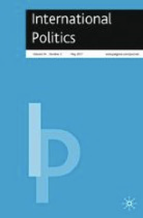
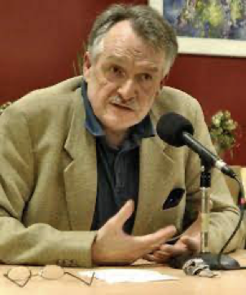
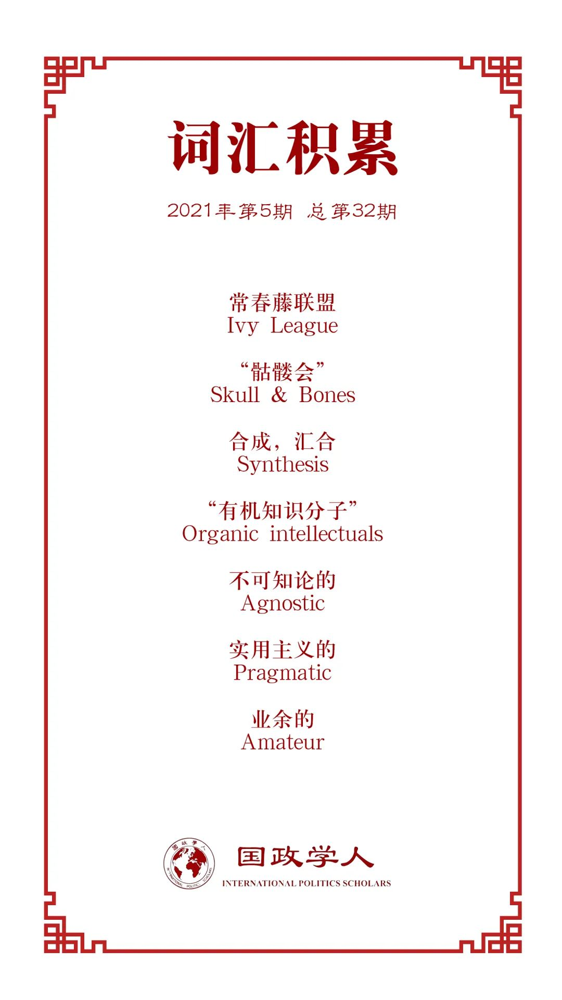

收录于合集

文章导读
【作者】 Kees van der Pijl，英国苏塞克斯大学国际关系学教授，现居荷兰阿姆斯特丹。研究领域为国际政治经济学、批判理论等。
【编译】 赖永祯（国政学人编译员，芝加哥大学）
【校对】 赵雷
【审核】 崔宇涵
【排版】 林祉欣
【美编】 李九阳
【来源】 Kees van der Pijl, (2017), “The World View of the Atlantic Ruling Class as Academic Discipline”, International Politics , 54, 292-305, https://doi.org/10.1057/s41311-017-0037-9.
【归档】 《国际关系前沿》2021第五期，总第32期
期刊简介

《国际政治》（ International Politics ）为帕尔格雷夫- 麦克米兰出版社出版的一项同行评议学术期刊，其关注领域为各类跨国政治与全球政治议题，并宣称在研究方法上“无特定取态”。2019年影响因子为0.619。
作为学科体系的大西洋统治阶层世界观：国关理论的发展
The World View of the Atlantic Ruling Class as Academic Discipline

Kees van der Pijl
内容提要
当代学界的学科分类体系奠基于美国。这种学科分类源自于早期英格兰的“不可知论假定下的实证主义”（agnostic empiricism）的观念传统与北美商界寻求建立支撑其国内与跨国霸权的“学术-情报体系”（academic intelligence base）这一现实需求的结合。在伍德罗·威尔逊介入第一次世界大战后，英美统治阶层中核心人物形成了如下的世界观：世界秩序应当由白人英语民族组成的心脏地带之下主导，并向开放通商的主权国家体系传播洛克式自由主义。俄国革命的发生增强了上述战略的紧迫性，并推动英美统治阶层形成对敌对国家实施对抗与政权更迭的次级战略。在20世纪20年代，威尔逊总统的心腹及其对英联络人沃尔特·李普曼（Walter Lippmann）寻求重组美国学术界，以使前者作为“学术-情报体系”以供建言资政。其后在逃离纳粹欧洲的“流亡学者”（émigré scholars）的加入下，由此形成了当代政治学与国际关系研究的学科基础架构及其政策咨询体系。二战后，这一“知识资本”基本形成并推广至欧洲及世界各地。
文章导读
作者认为，当代世界的学术分科体系是在美国对广泛意义上的“西方世界”（作者将这一地区称之为“洛克式心脏地带”（Lockean heartland），喻指洛克自由主义意识形态在该地取得霸权地位后寻求维护其政治经济主导地位而塑造的“社会结构”的一部分。在英国击败拿破仑帝国取得全球霸权后，就形成沃勒斯坦所说的“在文化与意识形态领域强化这一霸权并提供合法化论述的动力”，并形成了所谓“有闲阶级经济学”。1945年美国成为西方世界的霸权后由此形成了单一化的政治学与国际关系学，原先政治经济学中的帝国主义理论相对淡化。作者认为，这一过程是所谓“历史阶级的形成”（historical class formation）的一个方面，即霸权形成同时也伴随葛兰西所称的为统治阶层提供自洽性世界观论述的“有机知识分子”群体的形成。如果从这一角度审视社会科学的发展，那么当今社会科学的影响力地位处于相对下降的趋势，尽管世界各地的学术管理系统仍然坚持遵循这一由英美学界制定的学术规范。
01
“阶级形成”与美国社会科学规范的建立
作者认为，“洛克式国家-社会复合体”下的统治阶级通过其特权地位在物质与观念领域引导社会再生产的过程。与精英理论（elite theory）假定不同领域由不同的精英团体主导有所不同的是，“统治阶级”理论认为，社会基本关系的历史演变进程产生了各种社会动力（social force），而统治阶级在此基础上积累其优势。在社会系统持续演进的过程中，阶级关系趋向于非人格化的方式体现。统治阶级更多将管理权与其他综合性权力下放至支薪群体的助手或骨干，后者也是统治结构的一部分，但仍然处于被权力规训的状态中。“权力主体”日趋变得难以被即时辨认，或者体现为一种自行在社会领域中穿梭流动的状态。但是，人们不能将这种状态理解为权力在执行“自己的意志”而忽视了背后生产这一权力结构的阶级关系。
作者认为，这一框架也适用于理解知识的发展与学术实践过程。十九世纪劳工运动在英国催生了自由主义经济学理论，在法国形成了社会学；而德国、奥匈帝国与俄国的马克思主义影响下的劳工运动则对应地在当地知识群体形成了关于“社会问题”的研究。但以上的共同点都在于，他们都放弃将有关的知识生产建立在一种综合性、系统化的哲学观基础之上，由原先启蒙运动时期的乐观主义转变为以不可知论（agnostic）为基础的、以实证主义为角度提出有关社会问题的知识，以此维系既有的社会秩序。而在美国，知识分工则导致了学术界分科体系的形成。
导致美国趋向产生“学科分化”的原因在于，当时北美执掌高等教育的新教牧师并不希望将“系统化哲学”（systematic philosophy）引入其学科体系中。在美国内战结束后，尽管工程师和铁路公司背景的律师群体（以及后来像J.P.摩根等跨大西洋财团的加入）取代牧师执掌美国高校，他们也没有在高校中为各类科学知识建立统一哲学世界观基础的意图。相反，他们寻求用管理铁路线路的方式管理学术界，具体而言即运用避免路网重叠导致瘫痪的思路，避免学科重叠化发展。
02
丹尼尔·吉尔曼（Daniel Gilman）与跨大西洋“统治阶级”的初兴阶段
19世纪后期，美国联邦政府并无相关的所谓指导计划，而发展知识体系的任务落在类似常春藤学校的兄弟会组织网络上。它们在内战后发展成为“统治阶级”形成的网络节点，并成为原先清教徒定居者后裔与新富阶层后代加以联结的纽带。而耶鲁大学的秘密学生社团“骷髅会”（Skull & Bones）成员在日后高等教育领域发展发挥了重要影响力，其中丹尼尔·吉尔曼（1831-1908）为最知名的成员（曾担任该学生社团的司库）。他认为，高等教育应当避免学科建制的重叠化发展，应当用分门别类的学科规范加以组织。1872年吉尔曼成为加州大学伯克利分校首任校长，其后担任约翰斯·霍普金斯大学校长与卡内基研究所的创始人之一。吉尔曼的耶鲁骷髅会同学，出身于铁路行业的安德鲁·怀特（Andrew White）后来成为康奈尔大学首任校长与美国历史协会（American Historical Association）的首任主席。在1886年芝加哥爆发“干草市场事件”后，怀特认为传播“理性精神”成为抑制“非理性”民众运动的良药，而大学分科化建制则成为传播改进社会问题知识的方式。学科化由此称为传播专业主义和适应既有社会秩序的方式。
此外，吉尔曼也对推动特定学科发展作出了重要贡献。他选任理查德·艾利（Richard T. Ely，同为骷髅会同仁）在霍普金斯大学教授政治经济学，后者曾协助威廉·格雷厄姆·萨姆纳（William Graham Sumner,1872年后担任耶鲁大学政治学与社会科学讲席教授）共同创立美国经济学会（American Economic Association）。此外，吉尔曼还任命斯坦利·霍尔（Stanley Hall）负责在霍普金斯大学教授心理学。霍尔等人（包括他的学生约翰·杜威）在美国共同创立了功能心理学，成为后来实用主义哲学、以及社会科学中实证主义与“跨学科”发展的基础。
03
通向美国学术-情报体系的基石
在威尔逊担任总统后，其在外交上实施欧洲民族自决政策，支持原欧洲旧帝国境内民族独立；其后将中东欧民族独立国家纳入到抵抗俄国革命浪潮的“防护带”中，构建抵抗这一威胁的权力政治体系。如同吉尔曼成为内战后重组美国高校学术的主要人物，作为威尔逊的助手，沃尔特·李普曼（Walter Lippmann）成为该时期推动将威尔逊的理想主义纳入到学术体系建设中的核心人物，毕业于哈佛大学威廉·詹姆斯（William James）门下的李普曼后来积极在《新共和》杂志上积极呼吁建立一个英语国家组成的大西洋共同体，并由此赢得了威尔逊总统的信任。为应对美国参与一战后着手实施的战后计划，威尔逊总统任命李普曼担任为其推动构建和平提供建议的咨询机关“调查会”（The Inquiry）秘书。作为美国外交界首个情报收集与政策规划机关，“调查会”亦延揽学者加入，而他们也成为塑造北美国际关系学学科最终形态的主要力量。
在收集有关资料以备拟定十四点声明后，李普曼被派往游说英国政府与以“圆桌会议小组”（the Milner Group）的英帝国要员，并在巴黎和会前夕试图推动大西洋两岸的英美战略家共同加入“调查会”，扩大为一个“国际事务研究所”（Institute of International Affairs）。然而这一成立研究所的计划未能落实，原先在“调查会”的美国学者成立外交关系委员会（Council of Foreign Relations），由威尔逊总统驻英大使约翰·戴维斯（John W. Davis）担任主席，并由艾利胡·鲁特（Elihu Root, 前卡内基国际和平基金会主席）担任名誉主席。而在英国的人士则在阿诺德·汤因比（同为“圆桌会议小组”成员）领导下担任成立了皇家国际事务研究所（Royal Institute for International Affairs）。李普曼认为原有的洛克式自由主义政策不合时宜，并在1922年出版的《公共舆论》（Public Opinion）一书中提出建立一个由各大学参与的“中央机关”负责为外交政策贡献集体智慧，并可以反映至美国国务院；而美国政府的信息也可以供高校参考使用。作者认为，这一互动过程构建了一个政策导向的“新型社会科学”的基础，且在社会科学领域引入了实验研究方法，以及在此基础上促进了跨学科研究。
李普曼的方案最终使得社会科学研究得以在缺乏系统哲学观的基础上实现了整合，同时开创了现代学术- 情报体系的基础。学术界也日趋“社会化”成为决策者所需的集体知识，这也促使美国国家在一战结束后加强推动建设学术体系。学者的角色也转变为与政策制定密切相关的专业团体。尽管这一“社会化”的结构仍然是以私立机构（例如以钢铁、石油和汽车企业支持的智库体系和常春藤高校体系）为主导，但它们的活动在各方面同美国的政策制定密切联系，而各类学科组织也从属于以上的主要大型机构。例如当时的麻省理工学院校长亨利·普利奇特（Henry S. Pritchett，同时也是卡内基基金会教育促进项目（Carnegie Foundation for the Advancement of Teaching）主席）委任弗雷德里克·泰勒（美国管理学家，被誉为“科学管理之父”）对美国大学制度实施打破原有封闭“行会模式”的“重组”并改为建设学术市场的竞争体系，促进各学系主导的更大规模的专业化教育与研究，以服务于更广泛的社会大生产。
04
国际关系研究的“大西洋汇聚”：欧洲移民学者的加入
20世纪30年代大批欧陆学者前往美国以逃离纳粹势力，为北美的学术体系注入了新活力。作者认为，欧洲移民学者在北美原有的实用主义和“跨学科导向”传统中注入了韦伯式传统（Weberian thinking）。这在国际关系领域中体现为现实主义思潮的兴起，它源自于类似汉斯·摩根索等学者所继承的以韦伯、卡尔·施密特等人的“国家中心论”传统。如果说威尔逊提出的英美主导下的自由主义设想仍然是当代国际关系的不成文目标，那么现实主义及其遗泽则是应对“抵抗自由主义国家”的思路。作者认为，实用主义传统与摩根索现实主义关于“现实世界的非理性”的相互补充，造就了一种对“宏观历史发展”假定的拒斥。尽管存在理想主义与现实主义的“二律背反”，但是政策实践中的需要推动了国际关系理论的相互共存，并趋近于服务政策实践：对于决策者而言，两种“主义”的存在促使他们得以从集体安全或自助政策之间进行选择，而毋需考虑国际秩序是否真的处于无政府状态。
在最低层面的理论基础上，情报收集与学界资政的相互联系在二战后持续在学术- 情报体系中发挥作用。在二战期间，国际关系学者被延揽至战略情报局（OSS，成立于1941年，二战后在其基础上组建为中情局），而这一机构的运作则类似于一个“准学术机构”。作者援引约翰·冈奇（John Gange，曾担任国际研究学会（ISA）主席）的论述，战略情报局“很多层面上类似大学院系，有时内部成员的会议如同院系部门会议一般”。作者指出，在战后美国历史学会中有八位主席、美国经济学学会中的五位主席曾服务于战略情报局。此外作者指出，后曾担任中情局长的亚伦·杜勒斯（Allen Dulles）于1948年担任外交关系委员会主席，就曾延揽一批学界人士组成以其本人为核心的“普林斯顿咨询小组”（Princeton Consultants），成员包括马克斯·米利安（Max Milikan,来自麻省理工学院国际研究中心），罗伯特·鲍威（Robert Bowie,1953年至1957年担任美国国务院政策计划主任，1958年共同创立哈佛国际事务中心）以及历史学界和苏联问题专家，如克劳斯·克诺尔（Klaus Knorr），白鲁恂（Lucian Pye）等人。
05
欧洲社会科学的“马歇尔计划”
二战结束后，美国大型基金会对西欧大学与基金会的资助，促进了西欧地区的“文化转型”并逐步接受了美国式的“学术- 情报体系”，从而试图建立一个在美国领导下的、共享实践方式与价值观的大西洋共同体。此外，情报界也积极介入这一文化转型进程。例如1950年6月成立的“文化自由大会”（Congress for Cultural Freedom）中，包括一些与英美情报界有密切联系的学者（作者列举了美国政治学者詹姆斯·伯恩汉姆（James Burnham）与英国新实证主义哲学家A.J. 阿亚尔（A. J. Ayer）等人）就发起推广实证主义、理性主义与技术主导的现代性观念，并反对所谓的“总体哲学”。另一方面作者也指出，为在欧洲精英层削弱“反美主义”（Anti- Americanism）的影响力，美国福特基金会亦推动资助关于美国研究的学术讲座与大学院系，并且资助英国的国际战略研究院（International Institute of Strategic Studies）以增强北约组织的智识影响力（intellectual profile）与降低知识界的反核意识。在国际关系领域，作者指出，与洛克菲勒基金会有密切联系的肯尼迪·汤普逊（Kenneth Thompson）则与赫伯特·巴特菲尔德在20世纪50年代成立了英国版的“洛克菲勒委员会”，连同马丁·怀特和赫德利·布尔等人的加入，成为后来的“英国学派”的雏形。此外，美国政府和基金会组织亦通过资助西柏林自由大学与法国“人文科学基金会”的方式，对德国和法国的学术界的“美国化”发展发挥了重要作用。20世纪70年代后欧洲政治研究联合会（European Consortium for Political Research）的成立进一步推动了美国式政治科学（包括国际关系理论、定量方法与数理化推理运用）的发展，而该组织在当时的作用则是通过各种文化之间的集体协作，以期发展促进学科发展的新方式。这一集体协作暗合了跨学科研究的特征，而跨学科研究也就意味着边缘化“不被认可的”研究方法这一方式，使社会科学朝着更加规范化的方向发展。作者认为，二战后欧洲的社会科学学术发展很大部分源自于原先流亡美国后重返欧洲的“移民学者”，从而在西欧学界重现了北美学术界在20世纪30年代的“大西洋汇聚”进程。
06
结论：通向集体性的“有机知识分子”？
20世纪后期社会科学呈现“全球化”扩张的特征。尽管跨大西洋地区“洛克式心脏地带”也曾有在越战期间试图摆脱“学术- 情报体系”的社会科学学者，但自从里根上台至小布什发动“反恐战争”期间，西方世界的帝国式扩张很大程度上确保了主流政策相关学科的“强制取向”（coercive orientation）。仅仅后结构主义成为部分抵抗规范化潮流之学人的“飞地”。但是，后结构主义在话语上的反叛特征表现为通过用“语言助词的语用学”（a pragmatics of language particles）替代“元叙事”（meta- narratives）的方式，很大程度上促进了同时期新自由主义回潮下非马克思主义的发展。
此外作者认为，社会主义阵营的瓦解后全球范围劳动分工的“社会化”与相应的管理阶层的兴起进程，也使得社会科学的发展融入了这一进程。而苏东阵营的瓦解产生的意识形态真空导致美国式社会科学的进一步传播，则不过对这一进程起到了加速作用。规范化社会科学的发展塑造了如下知识界的“反思性权力”，即试图通过将自然和社会秩序分割为多个可管理的单元，从而成为人们更为贴切地理解与控制的对象。也就是说，生产全球化与管理阶层的兴起促成了各领域专业中统一范式（uniform curriculum）的发展，而服务于此中的“有机知识分子”，也因而最大限度地形成了集体性的协作方式。
如果能够理解美国从跨国资本主义霸权向政治霸权的发展过程，那么就能理解导致将大西洋统治阶级的地方性知识最终能够成为一种全球现象的悖论。而像吉尔曼和李普曼等人开创、后由各类大型基金会团体支持的规范化学术组织则成为维持全球范围对霸权“广泛认受性”（universally accepted）的支柱之一。在这一过程中，不同学科方法之间也在进行规范化的竞争（例如拉美地区智利在1973年后“新自由主义休克疗法”对“国家引导经济学”的替代），而大西洋统治阶级世界观则在全球范围内通过几代学生的努力不断传播。所谓的跨学科则统摄于“理性选择论”，或围绕流于表面的实证主义社会科学，或兼取二者而发展。而无论选择何种方式，这种被普遍接受的社会科学的维系取决于大西洋统治阶级持续维持霸权的能力。但随着近年来大西洋世界真实存在的社会撕裂现象与民众反叛运动的兴起（从疑欧主义的发展到特朗普当选美国总统），人们日益直面一个论断，即美国霸权在自身的心脏地带都处于崩解（unravelling）的状态。而关于这一变化如何影响世界秩序、以及影响思考这一世界的方式，将是一个有待各方讨论却不再是一个简单的问题。
译者评述
与自然科学不同的是，由于社会科学的研究者与研究对象都无法超然于现实中的社会世界，故而社会科学的研究涉及到对现实社会处境的理解。因此，诸多社会科学（包括关注“战争与和平问题”的国际关系在内）不仅仅是一个单纯“认识世界”的过程，而是对现实社会问题的管理和改造的冲动促使了对社会现象的研究。但是，为何一个学科内会形成所谓“主流”的理解和研究方式？本文作者回顾美国社会科学的发展历程，认为特定的理解方式能够成为“主流”离不开政治权力群体的支持，社会科学的发展某种程度上离不开现实社会中对社会进行管理的需求和支持作用。
作者认为，英美跨大西洋“统治阶级”群体是行使这一权力的群体。此处作者采纳的“统治阶级”更贴近于在原有阶级关系中获得优势地位从而“支配”社会意识形态领导权的群体，通过个人联系纽带和物质支持影响知识分子群体对价值观念（包括社会科学研究方式）的塑造，后者即所谓服务现状的“有机知识分子”。但值得指出的是，作者所言的“统治阶级”很难被界定为特定的群体，而更多是一个分散在各领域的影响力人士组成的非正式社会关系网。非正式关系联系了政学两界，通过高校、学会组织和基金会等方式扩大了其自身推崇的特定专业化方式的影响力（即形成作者所说的“学术- 情报体系”），使社会科学具有为政策决策服务而非“社会批判”的功能。并随着跨大西洋政治霸权的扩展而增强。也就是说，作者从部分政学界人士的个人关系网的角度，讲述了一个不同于“三大论战”的学科发展史故事，某种程度上是对社会科学“价值中立”的否定。但是，作者界定的“个人关系网”似乎忽视了人物之间可能存在的联系紧密程度的差异；而学科取态是否能够直接归因于一个非正式个人关系网而形成所谓“因果关系”，则是另一个见仁见智的问题。
词汇整理

文章观点不代表本平台观点，本平台评译分享的文章均出于专业学习之用, 不以任何盈利为目的，内容主要呈现对原文的介绍，原文内容请通过各高校购买的数据库自行下载。
国政学人
支持学术公益与知识传播
微信扫一扫赞赏作者 __赞赏
已喜欢，对作者说句悄悄话
取消 __
发送给作者
发送
最多40字，当前共字
上一页 1/3 下一页
长按二维码向我转账
支持学术公益与知识传播
受苹果公司新规定影响，微信 iOS 版的赞赏功能被关闭，可通过二维码转账支持公众号。